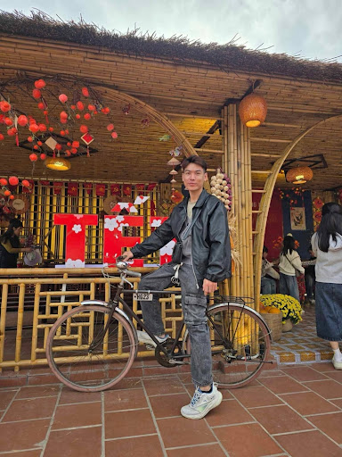

一點點關於我✳
學習，是我最喜歡的冒險。
用不同的視角，探索科技與生活的連結。
SAIGON · VIETNAM 2026 — NOW

✳ ✦ YOUR NEXT資訊管理 × AI × 前端開發
用不同的視角，探索科技與生活的連結。
我相信，好的科技不只是功能強大，更要讓複雜的事情變得簡單。
我是就讀資訊管理的學生，熱衷於人工智慧、前端開發與資訊整理。喜歡在商業需求與技術解方之間找到平衡，並把每一次新發現，轉化成真正有用的作品。
跟上 AI 與新工具的變化，讓好點子不只停留在想像。
將複雜的程式、資料與流程，整理成清晰易懂的邏輯。
每一項技能，都是下一次
探索的起點。
建立完整的 MIS 知識架構，深入理解前端開發。
把想法說清楚，讓團隊合作更順暢。
讓 AI 成為協作夥伴，專注創造更好的成果。
不管是合作機會、技術交流，或一個有趣的想法，都歡迎寫信給我。
我的 Email